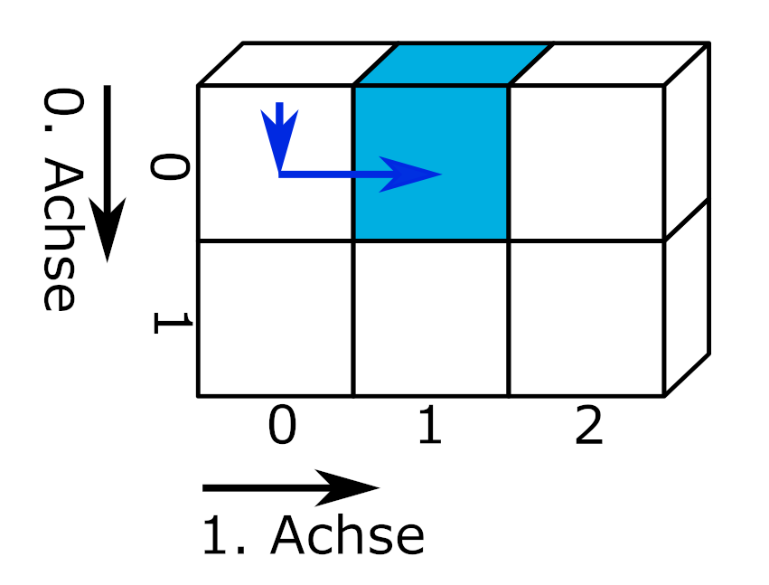

import numpy as np
import pandas as pd1 Einleitung
Das Modul Pandas wurde für die Arbeit mit strukturierten Daten konzipiert. Pandas erleichtert die Analyse insbesondere von in Tabellenform vorliegenden Daten, da es mit dem DataFrame eine leicht zu benutzende Struktur für die Verarbeitung unterschiedlicher Datentypen und fehlenden Werten bietet. Wie NumPy erlaubt Pandas vektorisierte Operationen, ohne mit Hilfe einer Schleife jedes Element eines Sammeltyps durchlaufen zu müssen. Pandas integriert darüber hinaus Funktionalitäten anderer Module und bietet unter anderem einen einheitlichen Zugang zu:
- Datumsinformationen und Zeitreihen
- Grafikerstellung
- Einlesen von Dateien
Das Modul Pandas wird mit dem Befehl import pandas geladen. Als Kürzel hat sich pd etabliert. Da Pandas auf dem Modul NumPy aufbaut, werden häufig beide Module geladen. Viele Funktionen und Methoden von NumPy und Pandas sind miteinander kompatibel.
1.1 Die Datenstrukturen Series und DataFrame
Pandas führt die zwei Klassen Series und DataFrame ein.
Seriessind eindimensionale Arrays, die genau einen Datentyp haben.DataFramesind zweidimensionale Arrays, die spaltenweise ausSeriesbestehen und so verschiedene Datentypen enthalten können. (Durch hierarchische Indexierung sind mehrdimensionale Datenstrukturen möglich, siehe MultiIndex.)
Beide Datenstrukturen verfügen über einen Index, der in der Ausgabe angezeigt wird.
Der Index beginnt wie in der Pythonbasis bei 0.
0 Frühschicht
1 Frühschicht
2 Spätschicht
dtype: stringDer Index ist standardmäßig numerisch, kann aber mit beliebigen Werten versehen werden.
Der Index kann angepasst werden.
Montag Frühschicht
Dienstag Frühschicht
Mittwoch Spätschicht
dtype: stringSeries
Series werden mit der Funktion pd.Series(data) erstellt. data kann ein Einzelwert, ein Sammeltyp oder ein NumPy-Array sein.
einzelwert_series = pd.Series('Hallo Welt!')
print(f"Series aus Einzelwert:\n{einzelwert_series}")
numerische_series = pd.Series([1, 2, 3])
print(f"\nSeries aus Liste:\n{numerische_series}")
alphanumerische_series = pd.Series(('a', '5', 'g'))
print(f"\nSeries aus Tupel:\n{alphanumerische_series}")
boolean_series = pd.Series(np.array([True, False, True])) # NumPy-Array
print(f"\nSeries aus NumPy-Array:\n{boolean_series}")Series aus Einzelwert:
0 Hallo Welt!
dtype: object
Series aus Liste:
0 1
1 2
2 3
dtype: int64
Series aus Tupel:
0 a
1 5
2 g
dtype: object
Series aus NumPy-Array:
0 True
1 False
2 True
dtype: boolBeim Anlegen einer pd.Series können verschiedene Parameter übergeben werden:
pd.Series(data, dtype = 'float')legt den Datentyp der Series fest.pd.Series(data, index = ['A1', 'B2', 'C3'])übergibt Werte für den Index.pd.Series(data, name = 'der Name')legt einen Namen für die Series fest.
numerische_series = pd.Series([1, 2, 3], dtype = 'float', index = ['A1', 'B2', 'C3'], name = 'Gleitkommazahlen')
print(numerische_series)A1 1.0
B2 2.0
C3 3.0
Name: Gleitkommazahlen, dtype: float64Für eine bestehende Series können Name und Index über entsprechende Attribute aufgerufen und geändert werden. Um den Datentyp zu ändern, wird die Methode pd.Series.astype() verwendet. Eine Übersicht der in Pandas verfügbaren Datentypen finden Sie in der Pandas-Dokumentation.
print(f"Name der Series: {numerische_series.name}")
numerische_series.name = 'Fließkommazahlen'
print(f"Index der Series: {numerische_series.index}")
numerische_series.index = ['eins', 'zwei', 'drei']
numerische_series = numerische_series.astype('string')
print(f"\nDie geänderte Series:\n{numerische_series}")Name der Series: Gleitkommazahlen
Index der Series: Index(['A1', 'B2', 'C3'], dtype='object')
Die geänderte Series:
eins 1.0
zwei 2.0
drei 3.0
Name: Fließkommazahlen, dtype: stringAufgabe Series
Ändern Sie den Datentyp des Objekts ‘numerische_series’ in Ganzzahl und wählen Sie einen neuen Namen für die Series aus. numerische_series = pd.Series([1, 2, 3], dtype = 'float', index = ['A1', 'B2', 'C3'], name = 'Gleitkommazahlen')
Tipp 1.1: Musterlösung dtype
numerische_series.name = 'Ganzzahlen'
numerische_series = numerische_series.astype('float')
numerische_series = numerische_series.astype('int')
print(numerische_series)eins 1
zwei 2
drei 3
Name: Ganzzahlen, dtype: int64DataFrame
Ein DataFrame wird mit der Funktion pd.DataFrame([data]) angelegt. data ist listenartig, kann aber aus einem Einzelwert, einer Series, einem Numpy-Array oder aus mehreren Series und Sammeltypen bestehen.
einzelwert_df = pd.DataFrame(['Hallo Welt!'])
print(einzelwert_df, "\n")
df_aus_listen = pd.DataFrame([[1, 2, 3], [4, 5, 6]])
print(df_aus_listen, "\n")
df_aus_series = pd.DataFrame([alphanumerische_series, boolean_series])
print(df_aus_series, "\n")
df_aus_verschieden = pd.DataFrame([np.array([True, False, True]), alphanumerische_series, [1, 2, 3]]) # NumPy-Array
print(df_aus_verschieden) 0
0 Hallo Welt!
0 1 2
0 1 2 3
1 4 5 6
0 1 2
0 a 5 g
1 True False True
0 1 2
0 True False True
1 a 5 g
2 1 2 3Beim Anlegen eines DataFrames können ebenfalls verschiedene Parameter übergeben werden:
pd.DataFrame(data, dtype = 'float')legt den Datentyp des DataFrames für alle Werte fest. Wird der Parameter nicht übergeben, wählt Pandas einen passenden Datentyp für jede Spalte aus.pd.DataFrame(data, index = ['A1', 'B2', 'C3'])übergibt Werte für den Index.pd.DataFrame(data, columns = ['Spalte1', 'Spalte2'])übergibt Werte für die Spaltenbeschriftung.
Um Daten spaltenweise einzutragen, kann der DataFrame zum einen mit dem Attribut DataFrame.T transponiert werden. Dabei müssen die Spaltenbeschriftungen als Argument index und die Indexbeschriftung als Argument columns übergeben werden.
df_transponiert = pd.DataFrame([[1, 2, 3], [True, False, True]], index = ['Spalte 1', 'Spalte 2'], columns = ['Zeile 1', 'Zeile 2', 'Zeile 3']).T
print(df_transponiert) Spalte 1 Spalte 2
Zeile 1 1 True
Zeile 2 2 False
Zeile 3 3 TrueEine direkte Zuordnung der Beschriftungen ist möglich, indem zuerst der transponierte DataFrame angelegt und anschließend über die Attribute .index und .columns die Beschriftungen eingetragen werden.
df_transponiert = pd.DataFrame([[1, 2, 3], [True, False, True]]).T
df_transponiert.columns = ['Spalte 1', 'Spalte 2']
df_transponiert.index = ['Zeile 1', 'Zeile 2', 'Zeile 3']
print(df_transponiert) Spalte 1 Spalte 2
Zeile 1 1 True
Zeile 2 2 False
Zeile 3 3 TrueDas Anlegen von transponierten DataFrames hat den Nachteil, dass Pandas die Datentypen der eingegebenen Daten spaltenweise verwaltet. Bei der zeilenweise erfolgenden Eingabe von Daten unterschiedlichen Datentyps wird ein für alle Spalten passender Datentyp gewählt. Im folgenden Beispiel wird deshalb von Pandas der Datentyp object für gemischte Datentypen gewählt.
df_transponiert = pd.DataFrame([[1, 2, 3], ['a', 'b', 'c']], index = ['Zahlen', 'Buchstaben']).T
print(df_transponiert)
print(f"\n{df_transponiert.dtypes}") Zahlen Buchstaben
0 1 a
1 2 b
2 3 c
Zahlen object
Buchstaben object
dtype: objectZum anderen kann ein DataFrame direkt aus einem Dictionary erzeugt werden. Dabei werden die Schlüssel als Spaltenbeschriftung verwendet.
df = pd.DataFrame({'Spalte 1': [1, 2, 3], 'Spalte 2': [4.1, 5.6, 6.0]}, index = ['oben', 'mitte', 'unten'])
print(df) Spalte 1 Spalte 2
oben 1 4.1
mitte 2 5.6
unten 3 6.0Außerdem kann ein DataFrame durch Zuweisung von Daten erweitert werden.
# einen leeren DataFrame erzeugen
df = pd.DataFrame()
# Zuweisung von Daten
df['Spaltenbeschriftung'] = [1, 2, 3]
df['zweite Spalte'] = alphanumerische_series
print(df) Spaltenbeschriftung zweite Spalte
0 1 a
1 2 5
2 3 g
Tipp 1.2: Der Index
In den meisten Fällen ist der von 0 bis n-1 reichende Index am praktischsten. Der numerische Index hilft bei der Auswahl von Indexbereichen (Slicing) und der Arbeit mit mehreren Datenstrukturen. Probieren Sie einmal aus, was passiert, wenn Sie einen DataFrame aus zwei Series mit unterschiedlichen Indizes erstellen.
Auch widerspricht das Auslagern beschreibender oder gemessener Variablen in den Index dem Konzept tidy data, einem System zum Strukturieren von Datensätzen, das Sie im Methodenbaustein Einlesen strukturierter Datensätze kennenlernen.
Bestehende DataFrames können ähnlich wie Series modifiziert werden. Um den Datentyp einer oder mehrerer Spalten zu ändern, wird die Methode pd.DataFrame.astype() verwendet.
df = pd.DataFrame({'Spalte 1': ['1', '2', '3'], 'Spalte 2': [True, False, True]})
print(f"Die Datentypen von df:\n{df.dtypes}")
# Datentyp von Spalte 1 ändern
df['Spalte 1'] = df['Spalte 1'].astype('string')
print(f"\nDie Datentypen von df:\n{df.dtypes}")Die Datentypen von df:
Spalte 1 object
Spalte 2 bool
dtype: object
Die Datentypen von df:
Spalte 1 string[python]
Spalte 2 bool
dtype: objectEbenso kann allen Spalten eines DataFrames ein Datentyp zugewiesen werden.
df = df.astype('string')
print(f"\nDie Datentypen von df:\n{df.dtypes}")
Die Datentypen von df:
Spalte 1 string[python]
Spalte 2 string[python]
dtype: objectUm unterschiedliche Datentypen zuzweisen, wird ein Dictionary verwendet.
df = df.astype({'Spalte 1': 'int', 'Spalte 2': 'bool'})
print(f"\nDie Datentypen von df:\n{df.dtypes}")
Die Datentypen von df:
Spalte 1 int64
Spalte 2 bool
dtype: objectSpaltennamen und Index eines bestehenden DataFrame können über entsprechende Attribute oder Methoden verändert werden. Die Spaltennamen können über das Attribut pd.DataFrame.columns geändert werden. Dabei wird eine Liste übergeben, deren Länge der Spaltenanzahl entsprechen muss. Der Index kann über das Attribut pd.DataFrame.index geändert werden, indem eine Liste zugewiesen wird. Dabei muss die Länge der Liste der Anzahl Zeilen entsprechen.
# ändern der Spaltennamen über das Attribut .columns
df.columns = ['Spalte1', 'Spalte2']
df.index = [1, 2, 3]
print(df) Spalte1 Spalte2
1 1 True
2 2 True
3 3 TrueMit der Methode pd.DataFrame.rename(columns = {"alt1": "neu1", "alt2": "neu2"}, index = {"alt1": "neu1", "alt2": "neu2"}, inplace = True) können Spalten- und Zeilenbeschriftungen in Form eines Dictionarys übergeben werden. Auf diese Weise können alle oder ausgewählte Beschriftungen geändert werden. Durch das Argument inplace = True erfolgt die Zuweisung direkt ohne Neuzuweisung des Objekts.
df.rename(columns = {'Spalte1': 'Spalte_1', 'Spalte2': 'Spalte_2'}, index = {1: 'A1', 2: 'B2', 3: 'C3'}, inplace = True)
print(df) Spalte_1 Spalte_2
A1 1 True
B2 2 True
C3 3 TrueMit der Methode pd.DataFrame.reset_index(inplace = True, drop = True) wird der Index auf die Standardwerte zurückgesetzt. Wird der Parameter drop = False gesetzt, wird der alte Index als Spalte an Indexposition 0 in den DataFrame eingefügt.
df.reset_index(inplace = True, drop = True)
print(df) Spalte_1 Spalte_2
0 1 True
1 2 True
2 3 TrueAufgabe DataFrame
Erstellen Sie einen DataFrame.
- Die erste Spalte soll die Zahlen von 1 bis 12 enthalten und mit ‘Nummer’ beschriftet werden. Die zweite Spalte soll die Monatsnamen des Jahres enthalten und mit ‘Monat’ beschriftet werden.
- Fügen Sie nachträglich die Series ‘ferien’ als dritte Spalte mit der Spaltenbeschriftung ‘Ferien’ ein.
ferien = [False, False, False, True, False, True, True, True, False, True, False, True]
Tipp 1.3: Musterlösung
ferien = [False, False, False, True, False, True, True, True, False, True, False, True]
df = pd.DataFrame({
'Nummer': list(range(1,13)),
'Monat': ['Januar', 'Februar', 'März', 'April', 'Mai', 'Juni', 'Juli', 'August', 'September', 'Oktober', 'November', 'Dezember'],
})
df['Ferien'] = ferien
print(df) Nummer Monat Ferien
0 1 Januar False
1 2 Februar False
2 3 März False
3 4 April True
4 5 Mai False
5 6 Juni True
6 7 Juli True
7 8 August True
8 9 September False
9 10 Oktober True
10 11 November False
11 12 Dezember True1.2 Deskriptive Datenanalyse mit Pandas
Pandas bietet einige praktische Funktionen, um den Aufbau eines Datensatzes und die enthaltenen Daten zu beschreiben. Als Beispieldatensatz dienen Daten zur Länge zahnbildender Zellen bei Meerschweinchen, die Vitamin C direkt (VC) oder in Form von Orangensaft (OJ) in unterschiedlichen Dosen erhielten.
dateipfad = "01-daten/ToothGrowth.csv"
meerschweinchen = pd.read_csv(filepath_or_buffer = dateipfad, sep = ',', header = 0, \
names = ['ID', 'len', 'supp', 'dose'], dtype = {'ID': 'int', 'len': 'float', 'dose': 'float', 'supp': 'category'})Crampton, E. W. 1947. „THE GROWTH OF THE ODONTOBLASTS OF THE INCISOR TOOTH AS A CRITERION OF THE VITAMIN C INTAKE OF THE GUINEA PIG“. The Journal of Nutrition 33 (5): 491–504. https://doi.org/10.1093/jn/33.5.491
Der Datensatz kann in R mit dem Befehl “ToothGrowth” aufgerufen werden.
Ein Aussschnitt des Datensatzes:
| ID | len | supp | dose | |
|---|---|---|---|---|
| 0 | 1 | 4.2 | VC | 0.5 |
| 10 | 11 | 16.5 | VC | 1.0 |
| 20 | 21 | 23.6 | VC | 2.0 |
| 30 | 31 | 15.2 | OJ | 0.5 |
| 40 | 41 | 19.7 | OJ | 1.0 |
| 50 | 51 | 25.5 | OJ | 2.0 |
Die Methode pd.DataFrame.info() erzeugt eine Beschreibung des Datensatzes.
meerschweinchen.info()<class 'pandas.core.frame.DataFrame'>
RangeIndex: 60 entries, 0 to 59
Data columns (total 4 columns):
# Column Non-Null Count Dtype
--- ------ -------------- -----
0 ID 60 non-null int64
1 len 60 non-null float64
2 supp 60 non-null category
3 dose 60 non-null float64
dtypes: category(1), float64(2), int64(1)
memory usage: 1.7 KBDie Dimensionen einer Series oder eines DataFrame können mit dem Attribut shape abgerufen werden. Der DataFrame hat 60 Zeilen und 4 Spalten.
print(meerschweinchen.shape)(60, 4)Die Methode pd.DataFrame.describe() erzeugt eine beschreibende Statistik für einen DataFrame. Standardmäßig werden alle numerischen Spalten berücksichtigt. Mit dem Parameter include können die zu berücksichtigenden Spalten vorgegeben werden. include = all berücksichtigt alle Spalten, was nicht unbedingt sinnvoll ist, da auf diese Weise auch die Spalte mit den ID-Nummern der Meerschweinchen ausgewertet wird.
print(meerschweinchen.describe(include = 'all')) ID len supp dose
count 60.000000 60.000000 60 60.000000
unique NaN NaN 2 NaN
top NaN NaN OJ NaN
freq NaN NaN 30 NaN
mean 30.500000 18.813333 NaN 1.166667
std 17.464249 7.649315 NaN 0.628872
min 1.000000 4.200000 NaN 0.500000
25% 15.750000 13.075000 NaN 0.500000
50% 30.500000 19.250000 NaN 1.000000
75% 45.250000 25.275000 NaN 2.000000
max 60.000000 33.900000 NaN 2.000000Mit dem Parameter include kann eine Liste zu berücksichtigender Datentypen übergeben werden. Der Parameter exclude schließt auf die gleiche Weise Datentypen von der Ausgabe aus.
print(meerschweinchen.describe(include = ['float'])) len dose
count 60.000000 60.000000
mean 18.813333 1.166667
std 7.649315 0.628872
min 4.200000 0.500000
25% 13.075000 0.500000
50% 19.250000 1.000000
75% 25.275000 2.000000
max 33.900000 2.000000print(meerschweinchen.describe(include = ['category'])) supp
count 60
unique 2
top OJ
freq 30Die Methode pd.DataFrame.count() zählt alle nicht fehlenden Werte in jeder Spalte oder mit pd.DataFrame.count(axis = 'columns') in jeder Zeile.
meerschweinchen.count(axis = 'rows') # der Standardwert von axis ist 'rows'ID 60
len 60
supp 60
dose 60
dtype: int64Die Methode pd.Series.value_counts() zählt die Anzahl der Merkmalsausprägungen in einer Series. Die Methode kann auch auf einen DataFrame angewendet werden, dann wird die Häufigkeit jeder einzigartigen Zeile gezählt (was hier nicht sinnvoll ist).
meerschweinchen['dose'].value_counts()dose
0.5 20
1.0 20
2.0 20
Name: count, dtype: int64Die Methode pd.unique() listet alle einzigartigen Werte einer Series auf.
meerschweinchen['dose'].unique()array([0.5, 1. , 2. ])1.3 Slicing

slicing von Marc Fehr ist lizensiert unter CC-BY-4.0 und abrufbar auf GitHub. Die Grafik wurde auf den gezeigten Teil beschnitten und die obenstehende Beschriftung entfernt. 2024
Pandas bringt eigene Werkzeuge für die Auswahl von Indexbereichen mit. Der Slice Operator aus der Pythonbasis wird deshalb nur kurz vorgestellt.
Slice Operator
Mit dem Slice Operator können wie bei einer Liste Indexbereiche aus einer Series ausgewählt werden.
zehn_zahlen = pd.Series(range(0, 10))
print(zehn_zahlen[3:6])3 3
4 4
5 5
dtype: int64Mit dem Slice Operator werden die Zeilen eines DataFrames ausgewählt.
print(meerschweinchen[7:12]) ID len supp dose
7 8 11.2 VC 0.5
8 9 5.2 VC 0.5
9 10 7.0 VC 0.5
10 11 16.5 VC 1.0
11 12 16.5 VC 1.0Durch Angabe eines Spaltennamens wird die entsprechende Spalte ausgewählt, die als Series zurückgegeben wird. Durch das Anfügen eines zweiten Slice Operators ist es möglich, wie bei einem eindimensionalen Datensatz die Werte in einem bestimmten Indexbereich abzurufen. Dies wird verkettete Indexierung genannt.
print(meerschweinchen['dose'][10:15], "\n")
print(type(meerschweinchen['dose'][10:15]))10 1.0
11 1.0
12 1.0
13 1.0
14 1.0
Name: dose, dtype: float64
<class 'pandas.core.series.Series'>
Hinweis 1.1: Verkettete Indexierung
Die verkettete Indexierung erzeugt in Pandas abhängig vom Kontext eine Kopie des Objekts oder greift auf den Speicherbereich des Objekts zu. Mit Pandas 3.0 wird die verkettete Indexierung nicht mehr unterstützt, das Anlegen einer Kopie wird zum Standard werden. Weitere Informationen erhalten Sie im zitierten Link.
“Whether a copy or a reference is returned for a setting operation, may depend on the context. This is sometimes called chained assignment and should be avoided. See Returning a View versus Copy.”
Slicing mit Pandas-Methoden
Für das Slicing von Series und DataFrames werden in Pandas die Methoden .iloc[] und .loc[] verwendet.
.loc[]arbeitet mit Index- oder Spaltenbeschriftungen, akzeptiert aber auch ein boolsches Array..iloc[]arbeitet mit Ganzzahlen, akzeptiert aber auch ein boolsches Array.
Für das Slicing von Series wird eine Bereichsangabe übergeben, bspw. pd.Series.iloc[5:8]. Für das Slicing von DataFrames werden zwei durch ein Komma getrennte Bereichsangaben übergeben, wobei an erster Stelle die Zeilen und an zweiter Stelle die Spalten ausgewählt werden, bspw. pd.DataFrame.iloc[5, 2:4]. Um alle Zeilen oder Spalten auszuwählen kann der Doppelpunkt verwendet werden, etwa pd.DataFrame.iloc[5, :].
Beschriftungsbasiertes Slicing mit .loc[]
Für eine Series interpretiert .loc übergebene Zeichen als Indexbeschriftung. Buchstaben und andere Zeichen werden wie strings in Anführungszeichen übergeben, bspw. .loc['e'], Zahlen ohne Anführungszeichen. Neben Einzelwerten ('a' oder 0) können Listen oder Arrays (['a', 'b', 'c'] oder [1, 2, 3]) und Slices übergeben werden ('a':'c' oder 0:2). Das Slicing mit einem Einzelwert führt zur Rückgabe eines Einzelwerts (sog. Skalar).
Hinweis 1.2: inklusives Slicing
Anders als die Pythonbasis und das Slicing mit .iloc[] zählt Pandas beim beschriftungsbasiertem Slicing inklusiv, gibt also die letzte ausgewählte Position mit aus.
# Nummern
zehn_zahlen = pd.Series(range(0, 10))
print("Rückgabe eines Einzelwerts:", zehn_zahlen.loc[5]) # Einzelwert
print(zehn_zahlen.loc[[2, 4, 7]]) # Liste
print(zehn_zahlen.loc[5:7], "\n") # Slice
# Buchstaben und andere Zeichen
sechs_zahlen = pd.Series(list(range(0, 6)), index = ['a', 'b', 'c', 'd', 'e', 'f'])
print("Rückgabe eines Einzelwerts:", sechs_zahlen.loc['c']) # Einzelwert
print(sechs_zahlen.loc[['c', 'f', 'a']]) # Liste
print(sechs_zahlen.loc['c':'e']) # SliceRückgabe eines Einzelwerts: 5
2 2
4 4
7 7
dtype: int64
5 5
6 6
7 7
dtype: int64
Rückgabe eines Einzelwerts: 2
c 2
f 5
a 0
dtype: int64
c 2
d 3
e 4
dtype: int64Die Interpretation als Beschriftung bedeutet, dass bei einem nicht numerischen Index als Slice übergebene Zahlen nicht gefunden werden. Hier muss mit der übergebenen Beschriftung gearbeitet werden.
try:
print(sechs_zahlen.loc[2:4])
except Exception as error:
print(error)
print("\n", sechs_zahlen.loc['c':'e'], sep = "\n")cannot do slice indexing on Index with these indexers [2] of type int
c 2
d 3
e 4
dtype: int64Für DataFrames funktioniert das Slicing genauso.
print(meerschweinchen.loc[18:22, ['len', 'dose']]) len dose
18 18.8 1.0
19 15.5 1.0
20 23.6 2.0
21 18.5 2.0
22 33.9 2.0Indexbasiertes Slicing mit .iloc[]
Die Methode .iloc[] ermöglicht die Auswahl von Ausschnitten basierend auf Indexpositionen. Die Methode akzeptiert die gleichen Eingaben wie die Methode .loc[].
Hinweis 1.3: exklusives Slicing
Beim Slicing mit der Methode .iloc[] zählt Pandas wie die Pythonbasis exklusiv.
Das Slicing mit Einzelwerten führt zur Ausgabe eines Einzelwertes. Die Methode akzeptiert ebenfalls eine Liste oder ein Slice.
print("Rückgabe eines Einzelwerts:", meerschweinchen.iloc[27, 2]) # Einzelwerte
print(meerschweinchen.iloc[[27, 29, 52], 2:4]) # Liste und SliceRückgabe eines Einzelwerts: VC
supp dose
27 VC 2.0
29 VC 2.0
52 OJ 2.0Die Methoden .head() und .tail()
Vereinfachte Varianten des indexbasierten Slicings sind die Methoden .head(n=5) und .tail(n=5), mit denen die ersten bzw. letzten n Zeilen eines DataFrame oder einer Series ausgegeben werden können. Über den optionalen Paramenter n kann die Anzahl der angezeigten Zeilen gesteuert werden. Die Methoden eignen sich gut, um sich einen ersten Eindruck von einem Datensatz zu verschaffen.
print(meerschweinchen.head(3), "\n")
print(meerschweinchen.tail(3)) ID len supp dose
0 1 4.2 VC 0.5
1 2 11.5 VC 0.5
2 3 7.3 VC 0.5
ID len supp dose
57 58 27.3 OJ 2.0
58 59 29.4 OJ 2.0
59 60 23.0 OJ 2.0Ebenso können Series damit betrachtet werden.
print(meerschweinchen['len'].tail(3))57 27.3
58 29.4
59 23.0
Name: len, dtype: float641.4 Aufgaben Slicing
Gegeben ist eine Pandas Series ‘temperaturen_2021’ mit den durchschnittlichen Monatstemperaturen.
temperaturen_2021 = pd.Series([2, 4, 7, 12, 19, 23, 25, 23, 18, 15, 9, 5],
index = ['Jan', 'Feb', 'Mär', 'Apr', 'Mai', 'Jun',
'Jul', 'Aug', 'Sep', 'Okt', 'Nov', 'Dez'])Wählen Sie die Temperaturen für die Frühlingsmonate (März bis Mai) aus.
Wählen Sie die Temperaturen für die letzten drei Monate des Jahres einmal mit Hilfe des Slicing Operators und einmal mit Hilfe der Pandas-Methoden aus.
Wählen Sie mit der Methode
.loc[]die Spalten ‘dose’ und ‘len’ des DataFrame meerschweinchen aus und geben Sie die ersten 4 und die letzten 3 Zeilen aus. (Code zum Einlesen der Datei siehe Code-Block 1.1)Die Methoden
.loc[]und.iloc[]akzeptieren auch ein boolsches Array als Eingabe. Geben Sie aus der Spalte ‘dose’ des DataFrame meerschweinchen alle Zeilen mit dem Wert 2.0 aus.
Tipp 1.4: Musterlösung Slicing
Aufgabe 1
print(temperaturen_2021.loc[['Mär', 'Apr', 'Mai']])Mär 7
Apr 12
Mai 19
dtype: int64Aufgabe 2
print(temperaturen_2021[-3:], "\n")
print(temperaturen_2021.iloc[-3:])Okt 15
Nov 9
Dez 5
dtype: int64
Okt 15
Nov 9
Dez 5
dtype: int64Aufgabe 3
print(meerschweinchen.loc[ :, ['dose', 'len']].head(n = 4), "\n")
print(meerschweinchen.loc[ :, ['dose', 'len']].tail(n = 3)) dose len
0 0.5 4.2
1 0.5 11.5
2 0.5 7.3
3 0.5 5.8
dose len
57 2.0 27.3
58 2.0 29.4
59 2.0 23.0Aufgabe 4
# Slice aus Series
# print(meerschweinchen['dose'].loc[meerschweinchen['dose'] == 2.0])
# Slice aus DataFrame
print(meerschweinchen.loc[meerschweinchen['dose'] == 2.0, ['dose']]) dose
20 2.0
21 2.0
22 2.0
23 2.0
24 2.0
25 2.0
26 2.0
27 2.0
28 2.0
29 2.0
50 2.0
51 2.0
52 2.0
53 2.0
54 2.0
55 2.0
56 2.0
57 2.0
58 2.0
59 2.01.5 Datenstrukturen verbinden
DataFrames sind flexible Datenspeicher. Mit der Funktion pd.concat() können Series und DataFrames zusammengeführt werden.
- Mit dem Argument
pd.concat(ignore_index = True)wird ein neuer Index generiert. - Mit dem Argument
pd.concat(axis = 1)werden die übergebenen objekte spaltenweise zusammengeführt.
series_1 = pd.Series([1, 2])
series_2 = pd.Series([4, 5])
print(pd.concat([series_1, series_2]), "\n")
print(pd.concat([series_1, series_2], ignore_index = True), "\n")
print(pd.concat([series_1, series_2], ignore_index = True, axis = 1))0 1
1 2
0 4
1 5
dtype: int64
0 1
1 2
2 4
3 5
dtype: int64
0 1
0 1 4
1 2 5Gleichermaßen können DataFrames verbunden werden.
temperaturen_2021 = pd.Series([2, 4, 7, 12, 19, 23, 25, 23, 18, 15, 9, 5],
index = ['Jan', 'Feb', 'Mär', 'Apr', 'Mai', 'Jun',
'Jul', 'Aug', 'Sep', 'Okt', 'Nov', 'Dez'])
temperaturen_2022 = pd.Series([3, 6, 9, 13, 18, 21, 24, 23, 19, 14, 8, 4],
index = ['Jan', 'Feb', 'Mär', 'Apr', 'Mai', 'Jun',
'Jul', 'Aug', 'Sep', 'Okt', 'Nov', 'Dez'])
temperaturen_2023 = pd.Series([-3, -1, 4, 9, 15, 20, 20, 19, 16, 15, 7, 6],
index = ['Jan', 'Feb', 'Mär', 'Apr', 'Mai', 'Jun',
'Jul', 'Aug', 'Sep', 'Okt', 'Nov', 'Dez'])
temperaturen_2024 = pd.Series([-1, 2, 5, 8, 17, 24, 25, 20, 17, 14, 9, 2],
index = ['Jan', 'Feb', 'Mär', 'Apr', 'Mai', 'Jun',
'Jul', 'Aug', 'Sep', 'Okt', 'Nov', 'Dez'])
# Series zu DataFrame verbinden
df1 = pd.concat([temperaturen_2021, temperaturen_2022], axis = 1)
df2 = pd.concat([temperaturen_2023, temperaturen_2024], axis = 1)
# DataFrames verbinden
temperaturen = pd.concat([df1, df2], axis = 1)
temperaturen.columns = [2021, 2022, 2023, 2024]
print(temperaturen) 2021 2022 2023 2024
Jan 2 3 -3 -1
Feb 4 6 -1 2
Mär 7 9 4 5
Apr 12 13 9 8
Mai 19 18 15 17
Jun 23 21 20 24
Jul 25 24 20 25
Aug 23 23 19 20
Sep 18 19 16 17
Okt 15 14 15 14
Nov 9 8 7 9
Dez 5 4 6 21.6 Einfügen und löschen in Datenstrukturen
Der Operator del aus der Pythonbasis löscht Spalten aus einem DataFrame del DataFrame['Spaltenname']. Pandas bringt aber auch eigene Methoden mit, um Einträge zeilen- / oder spaltenweise zu ergänzen und zu löschen.
pd.DataFrame.drop(labels = None, axis = 0, index = None, columns = None, inplace = False)entfernt Zeilen oder Spalten nach den mit dem Parameterlabelsals Einzelwert ('Spalte 1') oder als Liste (['Spalte 1', 'Spalte 2']) übergebenen Beschriftungen. Der Parameteraxissteuert, ob Zeilen oder Spalten (axis = 1) entfernt werden sollen. Die Parameterindexundcolumnssind alternative Möglichkeiten, Index- oder Spaltenbeschriftungen direkt zu übergeben und ersetzen die Parameterlabelsundaxis.pd.DataFrame.insert(loc, column, value)fügt eine Spalte an Positionlocmit dem Spaltennamencolumnund dem Inhaltvalueein. Fallsvalueeine Series mit abweichendem Index ist, kann über das Attributvalue = Series.valuesauf die enthaltenen Werte der Series zugegriffen und diese in den bestehenden Index einfgefügt werden (andernfalls gleicht Pandas die Indizes der Series und des DataFrames ab und fügt nur die Werte übereinstimmender Indizes ein).Werte können zeilenweise mit der Methode
pd.DataFrame.loc[index] = valueeingefügt werden. Fallsvalueeine Series ist, muss über das Attributvalue = Series.valuesauf die enthaltenen Werte der Series zugegriffen werden, da Pandas andernfalls versucht, den Index der Series mit den Spaltennamen des DataFrames abzugleichen. Wird alsvalueein Einzelwert übergeben, füllt dieser die gesamte Zeile aus.
1.7 Aufgaben verbinden und löschen
Legen Sie einen leeren DataFrame df = pd.DataFrame() an.
Fügen Sie die Spalten ‘len’ und ‘dose’ aus dem DataFrame ‘meerschweinchen’ ein.
Löschen Sie alle ungeraden Zeilennummern aus dem DataFrame df.
Benutzen Sie die Indexnummern des DataFrame df, um die entsprechenden Zeilen aus der Spalte ‘ID’ des DataFrame ‘meerschweinchen’ auszuwählen. Fügen Sie diese als Spalte an Indexposition 0 in den DataFrame df ein.
Tipp 1.5: Musterlösung verbinden und löschen
- Aufgabe
df = pd.DataFrame()
# Alternative 1
df['len'] = meerschweinchen['len']
# Alternative 2
df.insert(loc = 1, column = 'dose', value = meerschweinchen['dose'])
print(df.head(), "\n", df.shape) len dose
0 4.2 0.5
1 11.5 0.5
2 7.3 0.5
3 5.8 0.5
4 6.4 0.5
(60, 2)- Aufgabe
df = df.drop(index = range(1, len(df), 2))
print(df.head(), "\n", df.shape) len dose
0 4.2 0.5
2 7.3 0.5
4 6.4 0.5
6 11.2 0.5
8 5.2 0.5
(30, 2)- Aufgabe
df.insert(loc = 0, column = 'ID', value = meerschweinchen.loc[df.index, 'ID'])
print(df.head(), "\n")
print(df.tail(), "\n")
print("df.shape:", df.shape) ID len dose
0 1 4.2 0.5
2 3 7.3 0.5
4 5 6.4 0.5
6 7 11.2 0.5
8 9 5.2 0.5
ID len dose
50 51 25.5 2.0
52 53 22.4 2.0
54 55 24.8 2.0
56 57 26.4 2.0
58 59 29.4 2.0
df.shape: (30, 3)Quellen
https://pandas.pydata.org/docs/user_guide/dsintro.html https://pandas.pydata.org/docs/user_guide/basics.html